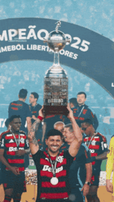
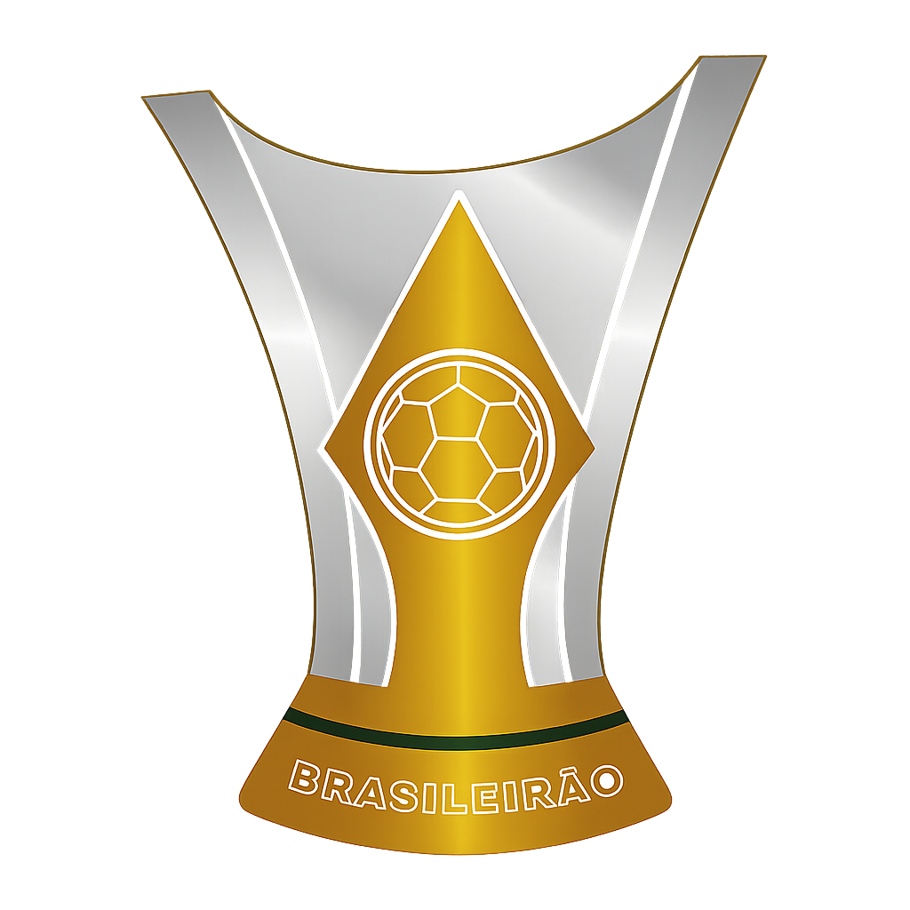
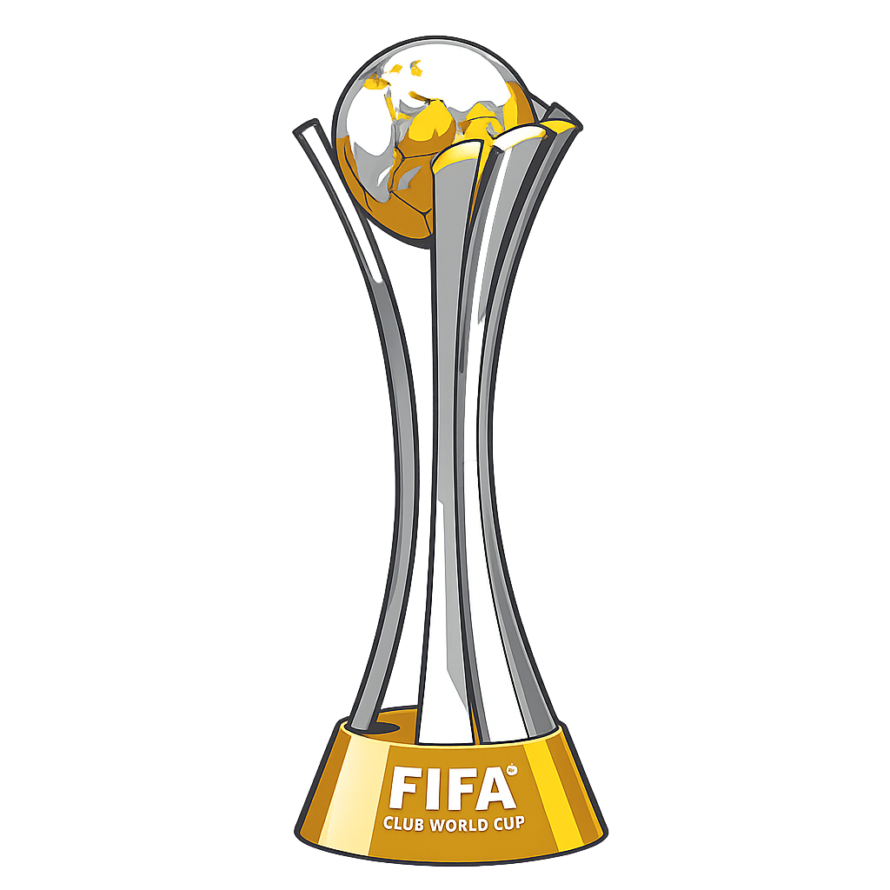
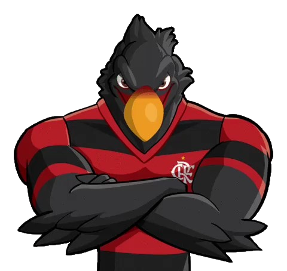

.png)
4x

8x

Fundado em 17 de novembro de 1895, o Clube de Regatas do Flamengo nasceu no Rio de Janeiro como um clube de remo. O futebol foi adotado oficialmente em 1911, tornando-se uma das maiores paixões da torcida rubro-negra.
Em 1914, o Flamengo conquistou seu primeiro Campeonato Carioca, iniciando uma trajetória vitoriosa e consolidando-se como uma das forças do futebol brasileiro.
Desde sua inauguração em 1950, o Estádio do Maracanã tornou-se a principal casa do Flamengo, palco de conquistas históricas e de recordes de público da torcida rubro-negra.
Sob o comando de Zico e de grandes jogadores da geração de ouro, o Flamengo conquistou a Libertadores e o Mundial Interclubes de 1981, vencendo o Liverpool e entrando para a história do futebol mundial.
Em 2019, o Flamengo voltou ao topo da América ao conquistar a Libertadores e o Campeonato Brasileiro. Em 2022, conquistou novamente a Libertadores e a Copa do Brasil, ampliando sua galeria de títulos.
Zico, Júnior, Leandro, Adriano Imperador e Gabigol são alguns dos maiores nomes da história do Clube de Regatas do Flamengo. 🔴⚫



